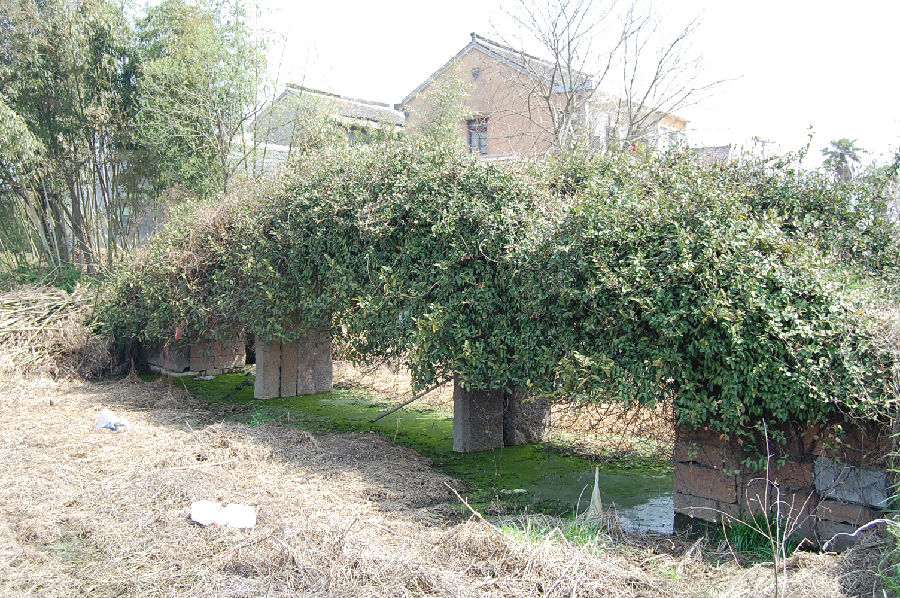

嘉兴市文物保护网 · 市级文物保护点 · 2020-11-09 · 原文

茜柳村小砖桥位于嘉兴市南湖区凤桥镇茜柳村13组，系三孔无栏梁式桥。桥始建年代不详，据其形制推断为清代。南北向横跨在陆家浜上，桥全长19米，宽约1米，桥距水面高4米，南、北各有台阶5级。该桥柱为金山石构成，桥身是砖木结构的，先由原木铺设好桥架，在此基础上铺设方形木板，再在木板上铺石板，然后再竖铺上小青砖。由于桥身长满的藤条已覆盖了大部分的桥面，具体面貌看不清楚。但据当地村民介绍，该桥已有四百到五百年的历史了。以前该桥是村上通往新篁镇的主要通道，现已极少通行。此桥的这种结构在现在已是极少看见了，历史悠久，对研究古桥梁的建造具有一定的意义，具有历史和科学价值。2009年公布为市级文保点。